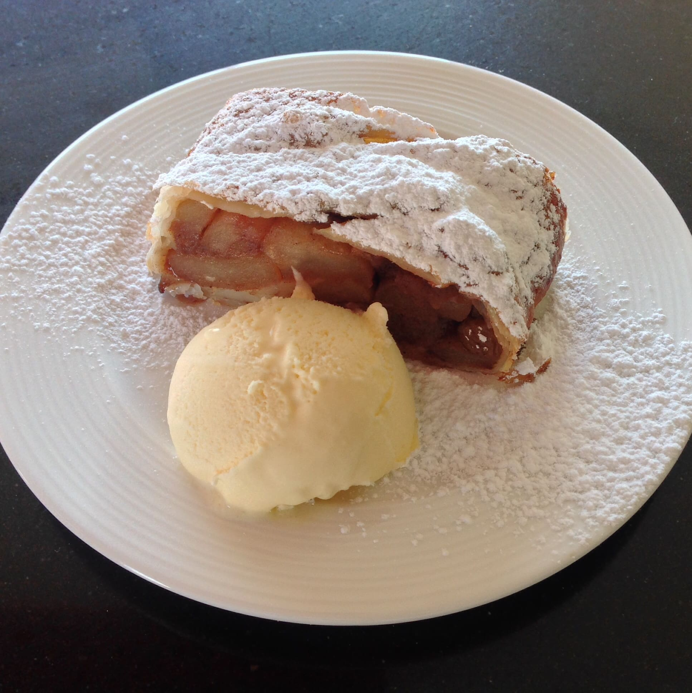

Built on faith, love, and a little flour dust.
Before A&J was a name, it was a handwritten note slipped into a parcel. A shared recipe written across time zones. A box of handmade gifts mailed across the sea, each one a promise that distance couldn’t break what love built.
Ana crafts our skincare line in the Philippines — selecting, testing, and curating each item with a personal standard that never compromises. From traditional ingredients to tested recipes, every product is something she uses and stands behind.
John documents the food we’ve shared along the way — the late-night brownies, the slow-roasted adobo, the small-batch banana bread that brought comfort in lonely seasons. What you’ll find here is the real stuff: the kind you pass down, the kind that matters.
We believe in the beauty of the personal — not mass-produced. Not rushed. Just honest craft, love-shaped, and meant to be shared.
Meet the Makers